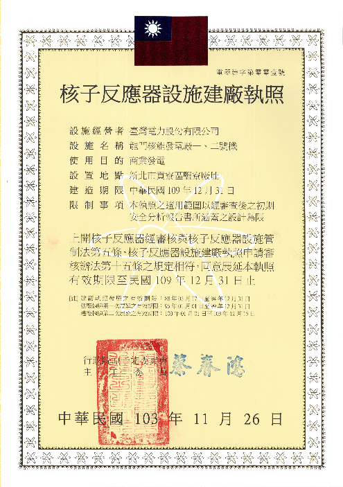

Department of Nuclear Engineering
核能執照網站
龍門FSAR/SER/SRP/封存計畫
龍門執照大事紀
-
1991年12月
行政院原能會對「台電對原能會審查環境影響評估結果之執行說明」及「環境影響評估報告修訂本」函覆准予核備。
-
1992年7月
核四計畫正式恢復動工。
-
1997年10月
台電將初期安全分析報告 (PSAR) 陳送原能會審查，申請建廠執照。
-
1999年3月
行政院原子能委員會核發核四廠建廠執照，建造期限至94年12月。
-
2000年10月
行政院宣佈停建核四。
-
2001年2月
行政院宣佈核四復工續建。
-
2004年12月
台電向原能會提出核四廠建廠執照展延申請。
-
2005年12月
行政院原子能委員會重新核發核四廠建廠執照，有效期限自95年1月1日至99年12月31日。
-
2007年8月
台電檢陳核四廠終期安全分析報告 (FSAR) 以及相關應檢附資料，向原能會申請一號機核子反應器初次裝填核子燃料。
-
2014年4月
獲經濟部指示準備提報「龍門電廠停工/封存計畫」。
-
2014年9月
陳報「龍門電廠停工/封存計畫」予原能會。
-
2014年12月
行政院原子能委員會重新核發核四廠建廠執照，同意展延有效期限至109年12月31日。
-
2015年1月
「龍門電廠停工/封存計畫」獲原能會准予備查。